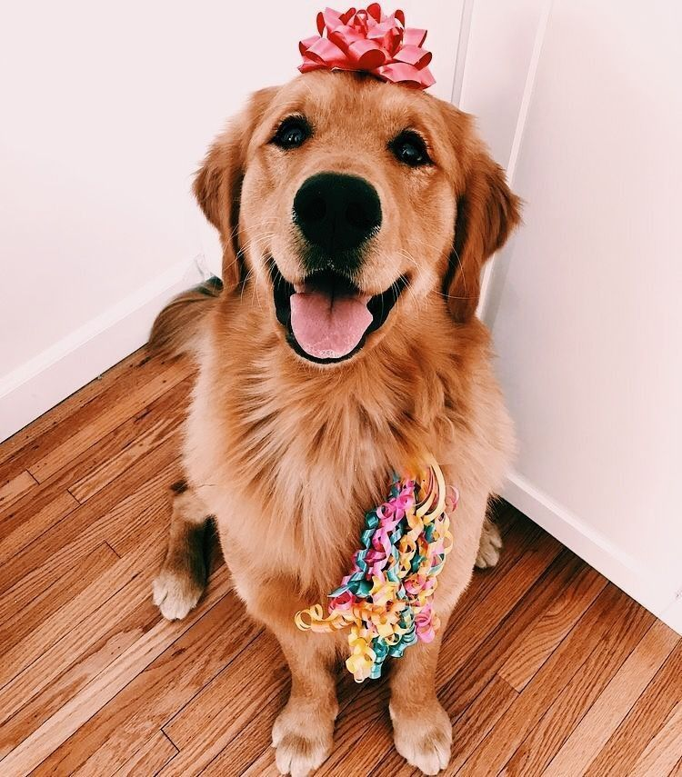

Como transcurre la vida de un perro
Curious story of Dogs

Cachorros
Todos los cachorros nacen con la capacidad de adaptarse a su entorno. Una de las etapas clave en todo cachorro, es el momento en el que empiezan a explorar el mundo a través de mordiscos —cuando intentan morder todo a su paso. En esta etapa los cachorros son vulnerables y susceptibles a tener problemas de inseguridad o nerviosismo. El aburrimiento o abandono afecta mucho su desarrollo ya que los priva de estímulos que resultan ser esenciales.
Adolecentes
El momento exacto del inicio de la etapa adolescente, depende particularmente del tamaño o raza de cada perro. Los perros de talla chica suelen entrar a la adolescencia alrededor de los 6 y 8 meses, los de talla grande entre los 9 y 12, y en cuanto a las tallas gigantes esto puede suceder entre los 12 y 18 meses. En esta etapa los cachorros desarrollan su carácter y es aquí en donde las inseguridades y miedos se acentúan. Es súper importante que en esta etapa eduquemos a nuestro Super Cachorro siempre con técnicas de refuerzo positivo ya que los regaños o castigos podrían empeorar las cosas.

Adultos
El comienzo de la etapa adulta varía dependiendo la raza y madurez de cada perro, pero es seguro que a los dos años tu Super Cachorro se habrá convertido en un adulto. Los perros pequeños maduran más rápido que los de talla grande o gigante. La madurez de tu perro dependerá mucho de la educación que lleve a lo largo de su vida. Los trabajos, tareas o deportes caninos siempre serán buenos aliados para hacer que tu perro sea un Super Cachorro equilibrado y seguro en muchos aspectos.
Quienes somos
La Fundacion Huellas de Mateo es el esfuerzo de una familia por ayudar a los miles de animales que se encuentran desprotegidos y en las calles de villavicencio. unos de nuestro objetivos es propender por la preservación y el cuidado de los caninos que se encuentran en el estado de indefensión, abandono, descuido o enfermedad; ahondando esfuerzos de personas naturales o jurídicas, nacionales, extranjeras y / o estatales..
contamos una con sede física arendada ya que solo somos un medio de conexión entre las personas que buscan una mascota y los hogares de paso. Además de esto recibimos cualquier tipo de ayuda para los animales de la fundacion ya que somos una fundacion sin animo de lucro.
Está es la primera versión de la pagina y esperamos poder seguir evolucionando para mejorar en algo esta problematica tan grande de nuestra cuidad y el pais.